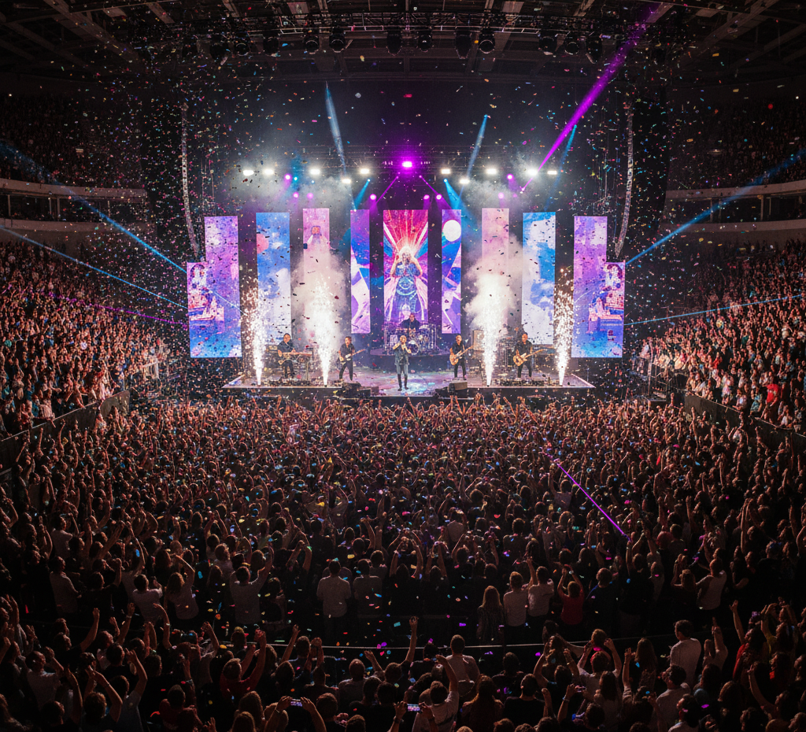

AIが数秒で生成する1曲に、
何時間もかける意味があるのか。
プロンプト一行で、それっぽい楽曲が数秒で生まれる時代。音作り・ミックス・アレンジに何日もかけて仕上げた1曲も、AI が量産した楽曲と同じプレイリストに並ぶ。「どれだけ時間をかけたか」「どんな想いで音を選んだか」は、リスナーには届かない。
DRAWINGS FOR THE PROCESS OF MUSIC MAKING
あなたの楽曲制作の
模索を、売りませんか。
AI 生成楽曲に埋もれない。
楽曲制作の過程を、世界に１つだけのデジタルグッズとして
販売できる、音楽クリエイターのためのプラットフォーム。
プロンプト一行で、それっぽい楽曲が数秒で生まれる時代。音作り・ミックス・アレンジに何日もかけて仕上げた1曲も、AI が量産した楽曲と同じプレイリストに並ぶ。「どれだけ時間をかけたか」「どんな想いで音を選んだか」は、リスナーには届かない。
音楽ストリーミングは1再生あたり数円以下。アーティスト名で再生されない限り埋もれていく。制作風景を YouTube や配信プラットフォームに上げても、広告収益は微々たるもの。時間をかけて作っても、報われない現実に疲弊している。
完成した楽曲だけが評価され、そこに至るまでのトラックメイキングや音作りの試行錯誤、ひらめきの瞬間は、誰のリスナーにも届かない。一番面白いはずの「途中」が、誰にも聴かれないまま消えていく。
AI時代だからこそ、
人が時間をかけて作った証明に、価値が生まれる。
CONCEPT / このプラットフォームの根本思想
完成した楽曲は、誰でもストリーミングで聴ける。けれど、その「制作の途中」だけは、世界で１人にしか所有できない。
Lapsell は、楽曲制作の 模索そのもの を、ファンが所有できるデジタルグッズに翻訳するためのプラットフォームです。
Lapsell アプリで楽曲制作を開始。録音ボタンを押すだけで、DAW の操作画面と制作中の音が自動的にタイムラプスとして記録され、クラウドにアップロードされる。
楽曲が完成したら録音を停止。制作過程は自動的に 10 分単位 に分割され、各区間が世界に１つだけのデジタルグッズとして整う。
ライブ会場・物販ブース・SNS・配信のジャケットに QR コードを掲載。ファンが購入すると、楽曲の制作過程と支援証明 NFT が自動発行される。
購入したファンは制作過程 NFT を他のファンに転売可能。転売時にはアーティストへ 一定のロイヤリティ が自動的に支払われる。
ライブハウスやフェスの物販ブースで、CD やグッズの横に QR コードを設置。たった今そのライブで聴いた楽曲の制作過程を、観客がその場で購入できる。熱量がピークの瞬間を逃さず収益化する。
QR コード付きのキーホルダー・アクリルスタンド・ピックを音楽グッズとして販売。ファンはいつでも持ち歩け、推しの楽曲制作過程をその場で見せられる。フィジカルとデジタルを融合した新しい応援の形。
新曲の制作開始前に、SNS で QR コードを共有。完成前から応援してくれるファンに、最初のビートが打ち込まれる瞬間から記録された特別な制作過程を届ける。クラウドファンディング的な使い方も可能。
DJ プレイ・即興セッション・ビートメイキングのライブ実演中に、まさに今生まれている音の制作過程を販売。観客はその場で購入し、後日その音源も手に入る。生まれた瞬間に立ち会った証として残せる。
ライブの告知フライヤー、ステッカー、ミュージシャンの名刺に QR を印刷。配った相手がいつでも楽曲とその制作過程にアクセスできる、最強のオーディション・営業ツールとして機能する。

アーティストのファンクラブやサブスク会員限定で、楽曲の制作過程を配布。コアファンとの絆を深めるエクスクルーシブな体験と、安定した定期収益を両立できる。
DTM 教室・オンライン作曲講座・ミックス講座の教材として制作過程を販売。プロの DAW ワークフロー、音作り、アレンジの組み立て方を学べる貴重な資料となり、音楽教育ビジネスに展開できる。
CD・アナログ盤・配信ジャケットの裏に QR を印刷。リリースした楽曲の裏にある創作プロセスをファンに届け、フィジカルとデジタルを融合した新しいリリース体験を作る。コンペやレーベルへのデモ提出にも差別化として効く。
即興セッション、ライブ限定アレンジ、リリースされない DJ ミックスなど、二度と同じ形では生まれない演奏の制作過程を記録。音源としてリリースされない一回性の音楽が、世界に１つだけのデジタルグッズとして永久に残る。
制作する時間が、そのまま収益になる。
推しが有名になる前から支援していた証拠が、一生残る。
| CODE | PRICE BAND | RATIO | BAR |
|---|---|---|---|
| P.01 | 3,001 円以上 | 15 % | |
| P.02 | 1,001 〜 3,000 円 | 8 % | |
| P.03 | 1 〜 1,000 円 | 9 % | |
| P.SUM | 支払意向あり（合計） | 32 % | |
| P.04 | 購入しない | 68 % |
MISSION STATEMENT
時間をかけて1曲を仕上げる音楽クリエイターが減れば、世界に流れる音楽は画一化してしまう。
私たちは、AI 任せにせず自分の手で音を選び抜くアーティストを応援します。